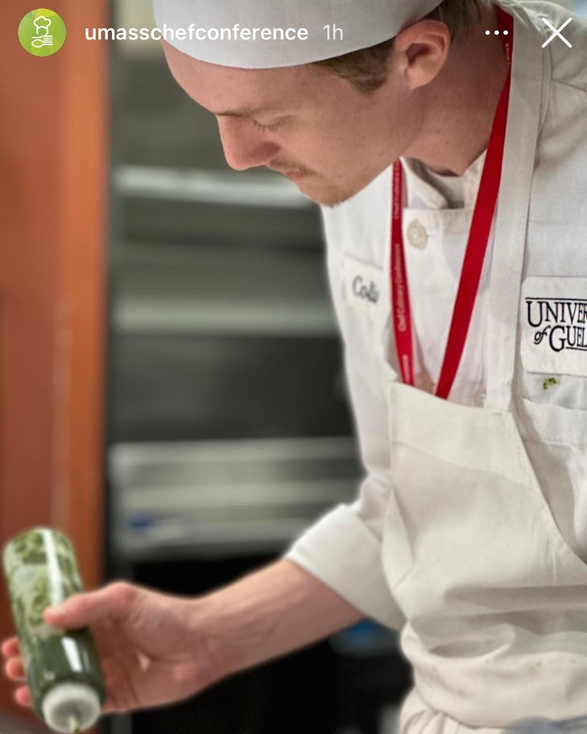

What I’m focused on
I enjoy application development, networking, debugging, and the design choices that make software easier to understand and extend. I am especially drawn to projects where architecture and user experience both matter.
Wrapping up Year 3 of my Computer Science degree, I enjoy application development, and turning rough ideas into tools that feel professional and solve real problems. I like software that does its job well, explains itself clearly and is made with love, just like my cooking.

I’m interested in building software that is useful, maintainable, and pleasant to interact with. My background includes both technical project work and leadership experience in hospitality, which shaped how I approach urgency, teamwork, and delivering a final product that feels cared for.
I enjoy application development, networking, debugging, and the design choices that make software easier to understand and extend. I am especially drawn to projects where architecture and user experience both matter.
I bring persistence, communication, and a habit of iterating after the first version works. I like finding the awkward corners in a project and smoothing them out until the whole thing feels tighter.
These projects cover full-stack web work, Java GUI applications, systems programming, and frontend development.
Python, Flask, MySQL, Web Development
A database-backed web application project focused on structured backend logic, data handling, and application flow. Highlights experience with practical full-stack development and connecting interfaces to persistent data.
Java, JavaFX, OOP, GUI Design
A task management application with a desktop GUI, object-oriented structure, and a focus on usability. Shows interest in turning functional tools into more polished, maintainable software.
Unity, Game Development, 2D Platformer
A 2D platformer game made during the Spring 2025 CVRI Game Jam by the 418 Teapots team. Experience fast-paced robot action and challenging levels. Free to play!
React, JavaScript, Frontend Development
A frontend-focused project exploring responsive interfaces, component-based structure, and cleaner user interaction patterns. Helps round out the portfolio with modern web work.
The toolkit section, always expanding.
C, C++, Java, JavaScript, C#, Python, SQL
React, React Native, Unity, Qt, Flask, JavaFX, Git, MySQL
OOP, client-server systems, networking, debugging, testing, UI design
Communication, teamwork, problem solving, refinement, urgency under pressure
Reach out through the usual digital trapdoors.
github.com/ColinGreenidge8896
linkedin.com/in/colin-greenidge
Open to software development and student opportunities.